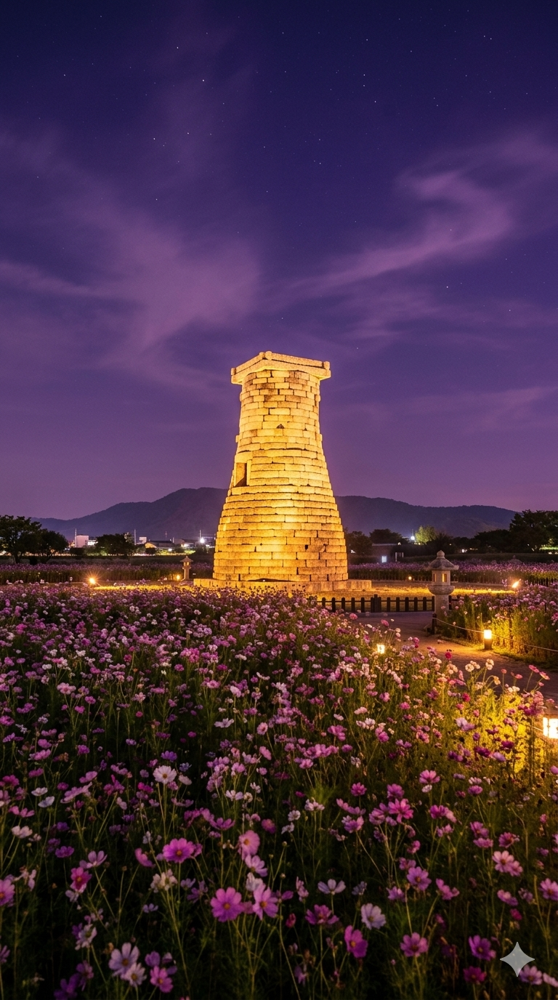

고즈넉한 돌담길부터 화려하게 수놓인 월정교의 반영까지, 시간의 결을 따라 걷는 경주에서 당신만의 이야기를 기록해 보세요.
About
경주는 기원전 57년부터 935년까지, 약 천 년이라는 긴 시간 동안 신라의 수도로서 찬란한 문화를 꽃피웠습니다. 도시 전체가 하나의 거대한 박물관이라 불릴 만큼 곳곳에서 고분과 사찰, 석탑이 자리를 지키고 있습니다.
Must-Visit
세계문화유산 · UNESCO
한국 불교 건축의 정수, 다보탑과 석가탑을 만날 수 있는 천년 고찰입니다.

국보 · 천문 유적
동양에서 가장 오래된 천문대입니다.
사적 · 고분군
신라 왕족의 고분이 모인 신비로운 정원입니다.
전통 · 야경
한옥의 우아함과 현대의 조명이 만나는 곳입니다.
역사 · 자연
잃어버린 천년 왕국의 웅장한 터를 마주해 보세요.
천년의 이야기가 당신을 기다립니다